Structural emergence from the void
Void Calculus builds upon Traction Theory, an algebra with a non-absorbing zero. Similar to a ring and field, a traction is a general-purpose algebraic object with restrictions around zero notably absent from the definitions.
Standard zero is a non-invertible, idempotent, absorbing element. Traction zero is none of these; it's a graded, invertible, information-conservative value.
Erasure is the additive identity, not zero. This is the information-conservative equivalence transformation in reverse.
Terms involving zero don't collapse unless it's by operational identity. Expressions don't necessarily simplify down to a single number.
The traction type is constructed from the closure of total, reversible operations. It doesn't have indeterminants.
Void Calculus explores this alternative framing of zero as it applies to ordinary Calculus.
We define a sample function for illustrative purposes.
By adding a zero offset, the information changes, but the projection to Real numbers would not.
By multiplying both sides of the equation by zero, both sides are effectively zero. Traction zero prevents this from collapsing to a trivial tautology, enabling zero-scaled expressions to be fully tractable.
Now we distribute the zero.
Then we group the terms by the grade of zero.
The resulting ordered expansion is called the Traction Jet. It plays the role of a Taylor jet, with successive powers of the traction parameter encoding successive differential orders.
In Traction Theory, 0*w=1. Multiplying by ω cancels the first order of 0.
This reveals the same f(x+0) as before.
We use the projection operator to truncate zero-terms. For the sake of simplicity, the projection operator P discards every traction order, retaining only the zeroth-order component.
Now we recover the first derivative by again multiplying by ω.
Because ω lowers traction order by one, the coefficient of the first-order traction term becomes the zeroth-order component. After projection, this coefficient is precisely the derivative.
Using the same example as in the previous section:
We now apply a multiplicative variant:
The f(x) in the numerator cancels out:
Leaving behind a residual with a unit offset.
Prior to projection, the ratio differs from unity only by first-order traction terms. Now see what happens when we divide out the zero:
Recall from Traction Theory: 0/0=1
And the 1/0 term can be written as w.
Then we could apply the projection to erase the residual terms.

Wherever f(x)=0, the multiplicative differential diverges. This can be represented as:
We multiply both sides by x^2+3*x-4:
Use the projection to simplify the equation:
Therefore, the critical point is:
Roots of f are vertical asymptotes in the logarithmic derivative. Vertical asymptotes are identified by their divergence, which is symbolized as the reciprocal of zero, ω.
Multiply both sides by x^2+3*x-4:
Isolate the w-terms:
Then invert:
Truncate the zero terms to simplify the equation:
Let z be the value that 3 + 2x would have to take in order to make 1/{3+2x} ~= 0:
Substitute x => {z-3}/2
What could z be substituted with to cause {4z}/{z^2-25} to diverge?
Substitute z => +-5
In this example, finding the roots would have been much easier if we had simply factored the polynomial. However, factoring can be complex. The value of this process is in isolating the complexity to a single square root.
(in progress)